貝殼放大為群眾募資公司，負責規劃整個募款工作，其餘支出為人名的推測為幕僚。
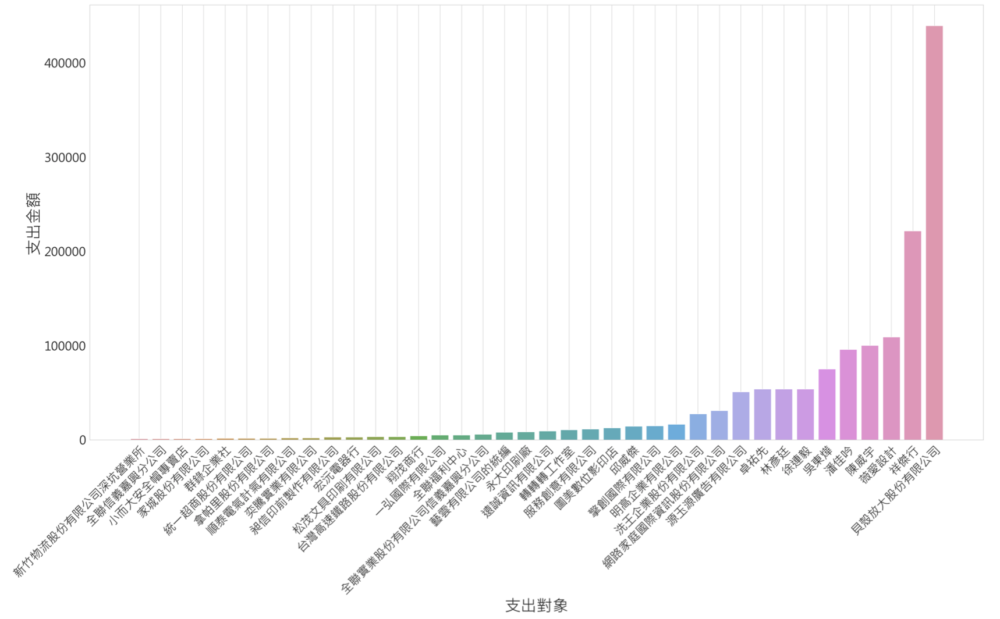最高支出即為支出給貝殼放大
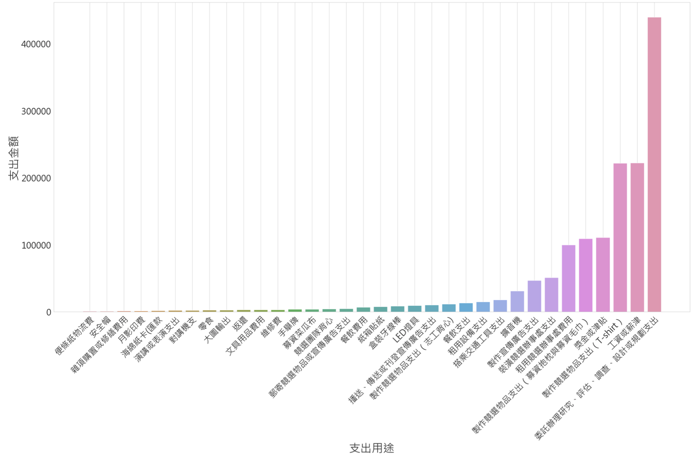可以看到除了宣傳支出較高以外，其他都非常低
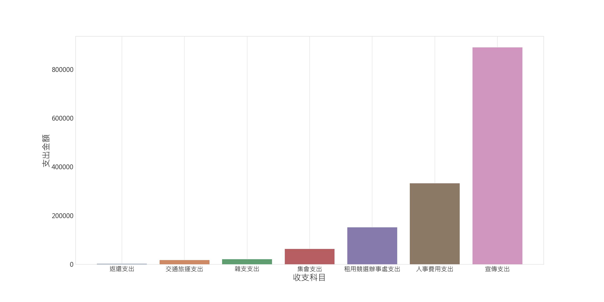兩千萬，才能選議員嗎？
除了徐巧芯與呱吉有相似的政治理念，不太收營利事業捐贈外，其餘都有相對高的營利事業收入，如果收了這麼多企業的錢，選上後能不幫忙企業在各種法案的通過等等這類的忙嗎？
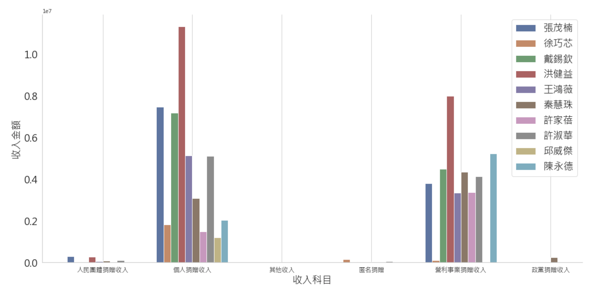徐巧芯同樣為松山區優秀候選人，曾與呱吉一同舉辦肥皂箱演講
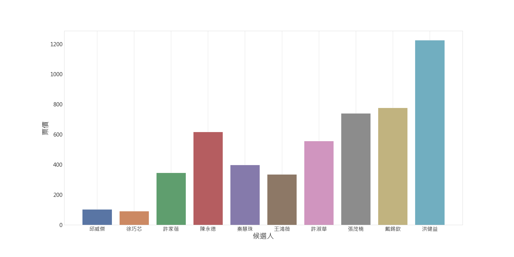幾乎所有候選人都花費了大量的金錢在宣傳方面，並且集會其實也有部分是宣傳型的集會，但是宣傳費如此高昂是否有收到實質的效果其實不是絕對
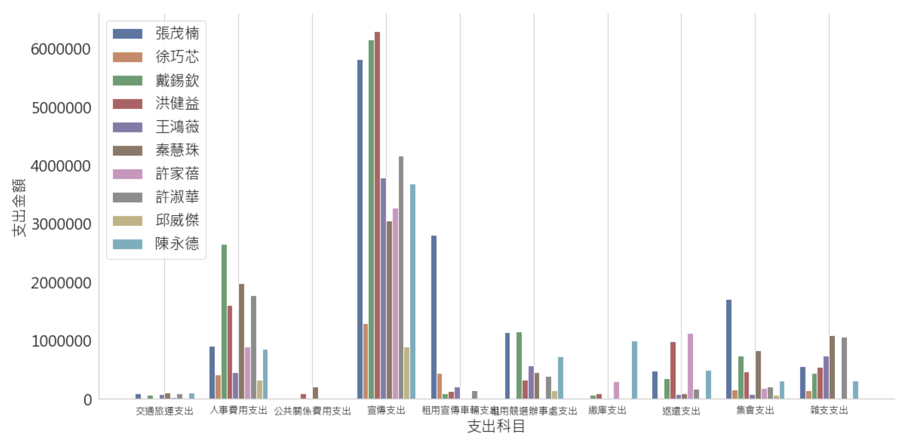許多候選人不論是在募捐階段或是支出階段，都沒有好好的規劃自己的金錢用途，政治獻金的目的是選舉，超支跟超收，都是一大問題，尤其像其中餘額九百多萬根本就是非常誇張的數字，這樣超收超支的傳統非常需要改變。
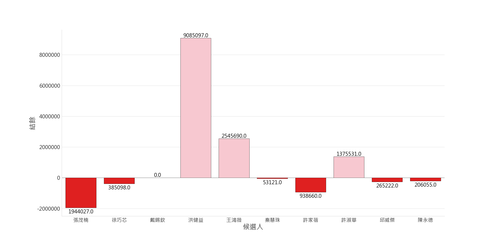我們接下來就來看看超支快兩百萬的張茂楠怎麼花那麼多錢，可以看到許多不必要的支出項目，接下來就來逐一檢視
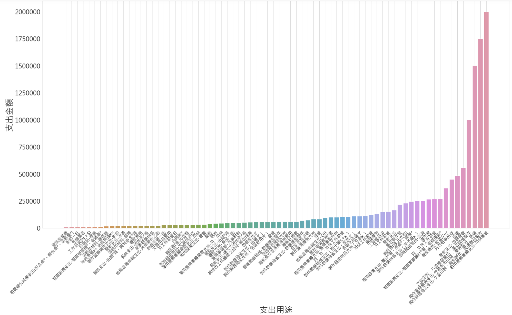可以發現政治獻金的收入金額數量跟政黨無絕對的關係
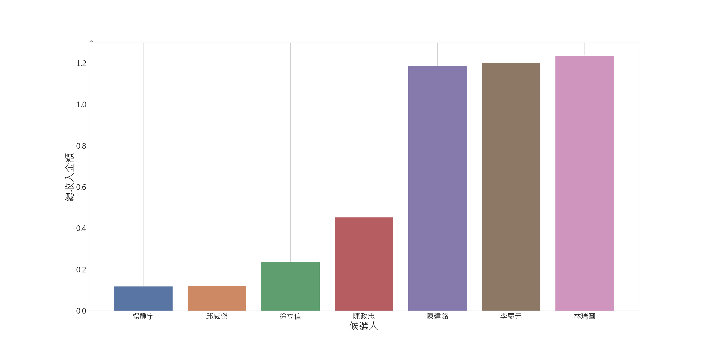同樣跟收不收營利事業的錢也有很大關係，收了錢，就要幫忙喬事情
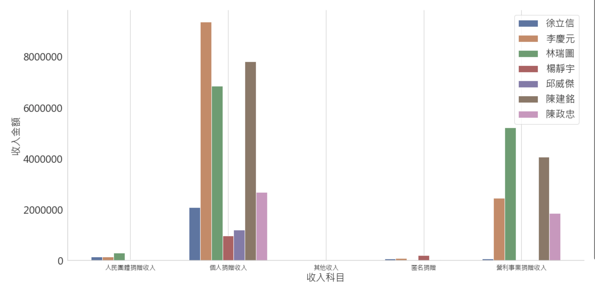支出金額如同有政黨的候選人一樣，支出非常高，再次印證了政治獻金的支出收入，皆與政黨無關
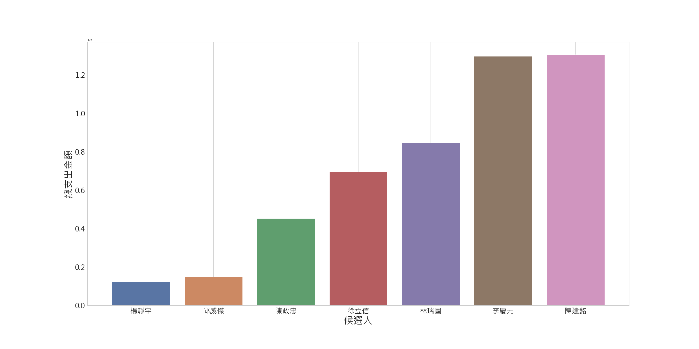人事費用高的誇張的幾位議員，其實也會讓許多人質疑需要這麼大的競選團隊才能勝選嗎？
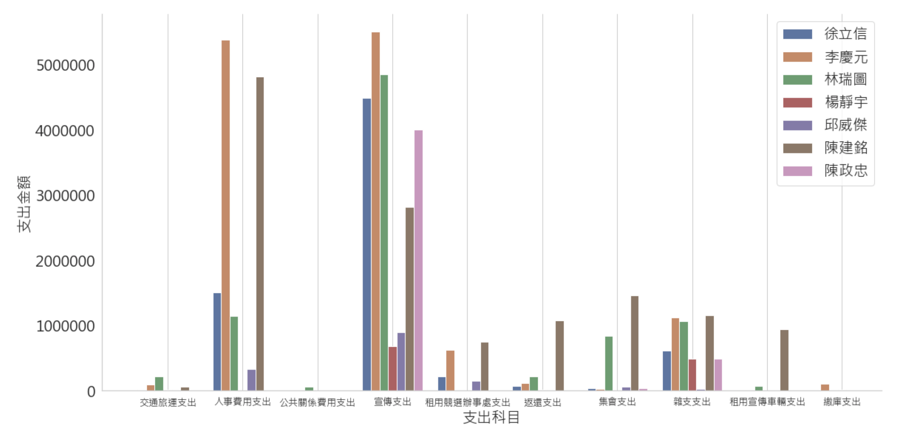同樣政治獻金應該是規劃花多少，就收多少，而不是無限上綱永遠花不夠，或是根本花不完，超支四百多萬是非常誇張的數字
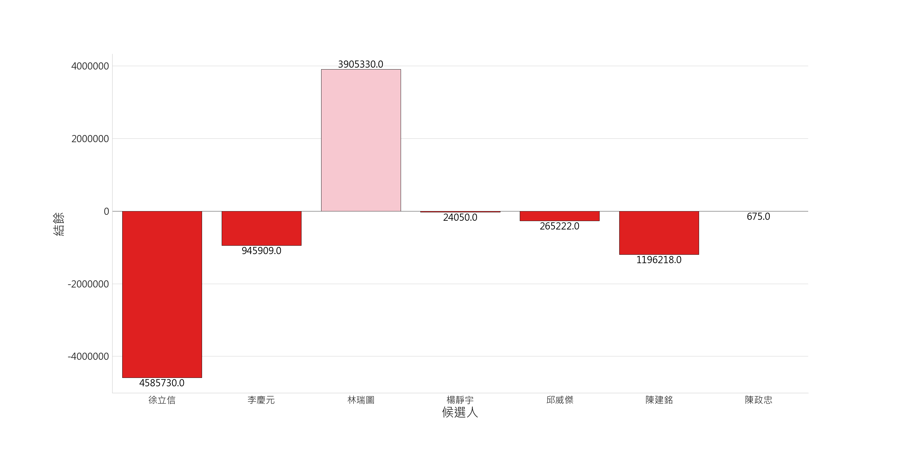楊靜宇的整體收支都非常低，且也沒有收營利事業捐贈，感覺蠻厲害的來看看他，身為士林區議員，上一屆高票落馬後持續在地服務，繼續以地方為出發服務士林區民，這次不負眾望當選
呱吉表示只選一屆的原因：「如果我心裡想著要連任的話，就會跟區內的里長以及各種勢力如建商妥協，只為了獲得下屆連任勝選的資源。」
呱吉曾經說過他的粉絲年齡層為20~40歲
因此我們希望以這樣的人口比例以及呱吉的頻道粉絲數來推估到底有多少呱吉的粉絲戶籍在選區
1. 先來看看信義松山區佔台灣人口的多少百分比
2. 再來是呱吉的TA年齡層佔了多少百分比
3. 推估有多少人是呱吉的粉絲
4. 假設這些粉絲都會投給呱吉
以(松山信義青壯年人口數/台灣總人口數)*呱吉訂閱粉絲數 = 265594
推估在呱吉選區的粉絲人數：1602
粉絲投票比例：13.59%
也才佔不到15%
以PTT,Youtube作為資料來源，分析大家在討論有關呱吉的事件是什麼，以及討論聲量的變化量
我們希望能根據內文將Po文分群，並且分析其中的事件，因此這邊採用兩種方法做特徵的提取：
我們可以從上述結果發現，關聯規則幾乎無法找到相關性，原因在於關聯規則計算次數須為完全一樣的詞才能算一次，而在BERT當中只要有相似字即可代表有相關性，因此BERT可以將內文的關聯顯示出來，並且再降維時，TSNE又比PCA更好的將群分開，因此我們選擇用TSNE降維完的Embedding做接下來的處理
可以看到以K-Means分群可以把近似點分再一起，而我們觀察視覺化圖發現大概可以分為四群因此數量設為4
呱吉為市議員，而工作就是監督市長，因此我們統計內文中同時有提到柯市長的比例，發現第四群的討論倒市長的比例明顯比其他三者低，也有可能是群集離大群體較遠的原因之一
以向量的Cosine-similarity計算兩者相似度
至於這邊可以用count-base的原因在於，討論兩個主體時字詞會是一樣的例如：柯文哲開工大巨蛋；柯文哲動工大巨蛋，在取出同樣字詞中是可行的主要使count-base相關性降低的原因在於形容詞、副詞這類取代性相對高的詞語
1. 公共住宅問題
2. 大巨蛋議題
3. 嗆別人吸白粉
4. 大港開唱脫褲子嗆韓市長
呱吉多次登上熱搜版面即因有條理，理性的質詢柯市長，而爆紅，我們就來看看網友們怎麼看
四月為呱吉首度針對柯市長進行公宅質詢，因此討論度提高，而呱吉也有在每次質詢時持續追蹤此議題，因此討論度有一直延續
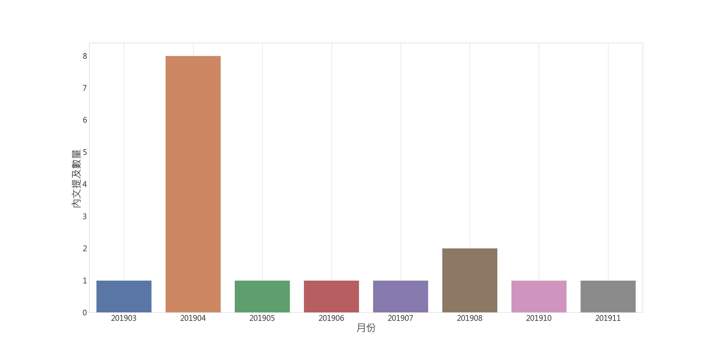我們以留言做正負面統計，使用SnowNLP做情緒分析，判斷是正面情緒的機率，因此這邊以0.4作為閥值，大於閥值則為正面
與新聞報導不太一樣其實是有原因的，新聞報導多報導為理性問政，言之有物，但是其實進一步去查看PTT鄉民或是其他論壇討論，多在批判呱吉不懂的換位思考，作為市長需要考慮的事情很多而不是房租貴就便宜一點，因此有許多網友認為呱吉不夠務實，只是理想化的質詢
呱吉於三月開始對大巨蛋的質詢，並且對於搬遷老樹等議題持續關心
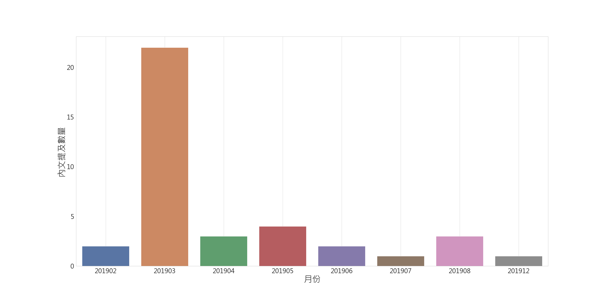對於呱吉質詢大巨蛋多數的網友認為這是在炒冷飯，因為過去多位議員已經針對此議題質詢過柯市長，並且在質詢或是老樹遷移時，呱吉皆有因為態度不佳或飆罵基層人員而受到大家的批平，因此大部份的網民依舊對呱吉的質詢不買單
吸白粉意思為『吸引中間選民』，也指柯文哲等無政黨政治人物的粉絲，事件起因為呱吉被鄉民質疑花很多時間在公祭等等外務，不如柯市長準時上下班，因此回嗆酸民，此事件於三月時爆發開來，後續也不斷的有網民指出呱吉需要為此事件道歉。
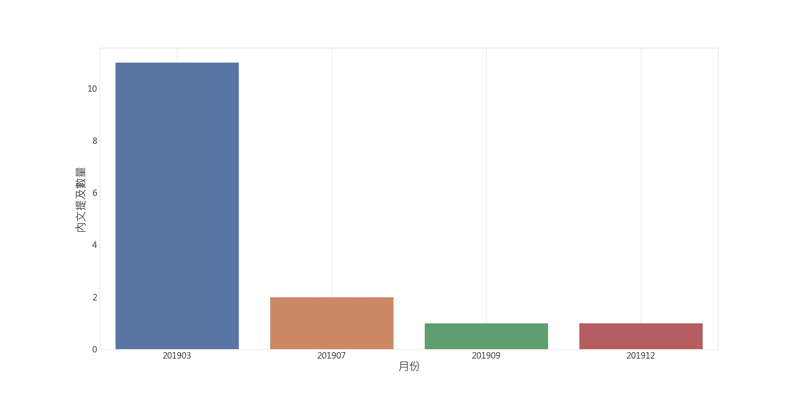可以看到超過90%的網民都不支持此事件，且後續只要提到呱吉，許多網民就會在底下留言呼籲呱吉需要為白粉事件道歉
此事件於九月爆發開來，由於脫褲子、嗆韓國瑜等等拖續行為對年輕人來說，根本不是什麼大事情，也有許多網民認為只是韓國瑜團隊在大做文章(p.s. 也有可能是大家討厭韓國瑜的程度遠大於呱吉)
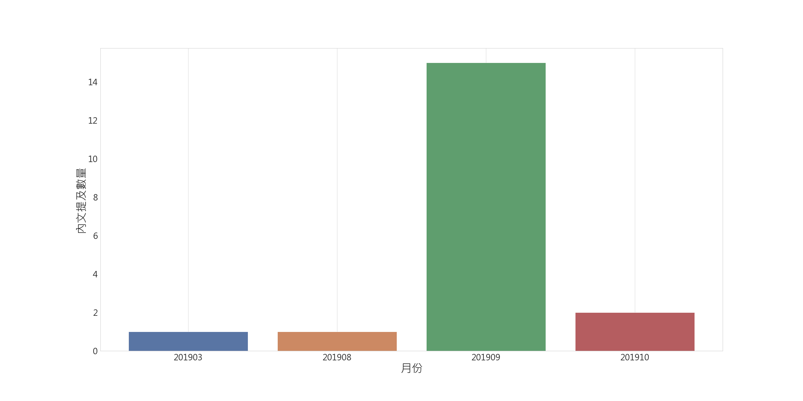可以看到此事件多數網民認為呱吉於大港開唱事件並非正式場合，且對於台下觀眾的反應也沒有不悅，因此認為次事件為呱吉被惡意抹黑及造謠
我們在Youtube挑選呱吉問政留言超過200則的影片
可以看到倒讚的比例幾乎為最高也只有6%，可見呱吉在Youtube上的評價非常高
會呈現這樣的分佈主因是問政幾乎都集中在4,5,6月因此我們抓的影片也多集中在這三個月
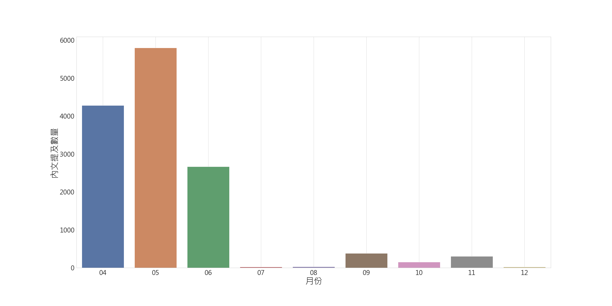由於留言都是對呱吉的問政做留言因此我們不做文字分群，直接做情緒分析
可以看到支持的留言佔了很大的百分比，推測原因在於許多支持留言讚的是呱吉的問政態度，與內容無絕對的關聯
可以看到各種正面評語都出現在了文字雲中，"專業"、"清楚"、"正常"、"理性"、"水準"，都代表著對呱吉問政表現的稱讚
1. 政治獻金分析，以政治獻金的觀點來看，我們可以知道呱吉是一個有想法的議員，認真想要為了市政做改變，為整個選舉制度做改變，也成功地在政治獻金上面做到了跟以前不一樣的理念，並且鼓勵同樣想要改變的年輕人站出來，這點呱吉做得非常好。
2. 粉絲人數推估，以訂閱數以及人口數來做推估，可以發現其實呱吉的得票來自粉絲的比例其實不算高，因此可以把功勞歸給在選前呱吉在地方所做的努力，例如肥皂箱會議等等。
3. PTT留言分析，我們對PTT的留言分析過後，其實是發生了意想不到的結果，因為之前我也被主流或網路媒體所報導的呱吉問政有條理所誤以為呱吉的問政內容是有力的，但是經過分析後才發現其實多數在PTT做出評論的留言，他們看完呱吉的質詢內容之後反而不以為然，因此我認為這是呱吉需要去加強的，有條有理的問政已經比多數的議員好太多，但是要做得更好必須讓內容更有建設性，並且我們也發現了在質詢內容中或是內文中完全沒有提到呱吉所提倡的七大政見，有部分原因有可能是因為這些事情是不需要拿來質詢市長的，但也有部分原因是呱吉多數時間拿來監督大巨蛋或是公共住宅，這部分如果是為了人民福祉則是可以被諒解的，但是還是認為呱吉必須謹守當初的承諾對政見負責。
4. Youtube留言分析，這點即為上述所提到的問政內容，到底留言者有多少對內容思考過，因為多數的留言並不是指出呱吉提出的問題犀利、一針見血、指出通點等等，而是說有條有理、認真質詢，是否我們大部分的人都被這樣的外表而屏蔽了對內容辨別的能力，是我們都需要去思考的，問政態度固然重要，但是其實最重要的還是有解決問題。